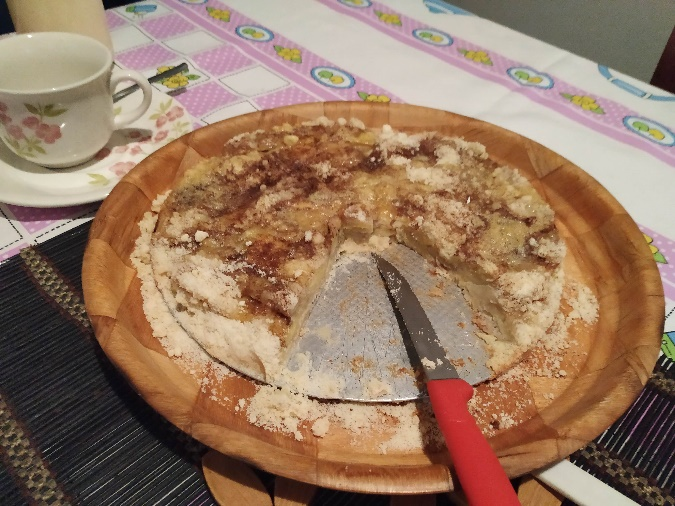

Torta de Sogra
Ingredientes
- 12 colheres de farinha de trigo
- 12 colheres de açúcar
- 1 tablete de margarina (100g)
- 3 a 4 maçãs ou banana
- 2 ovos inteiros
Modo de Preparo
Derreter a margarina, acrescentar o açúcar e a farinha de trigo mexendo até formar uma farofa. Dividir a farofa em duas partes. Forrar uma forma com uma parte da farofa, por cima colocar maçãs ou bananas ou um pouco de cada e cobrir com a outra parte da farofa. Bater os ovos e jogar por cima e polvilhar com canela. Pode também colocar algumas gotas de conhaque ou rum a gosto. Assar até corar.
